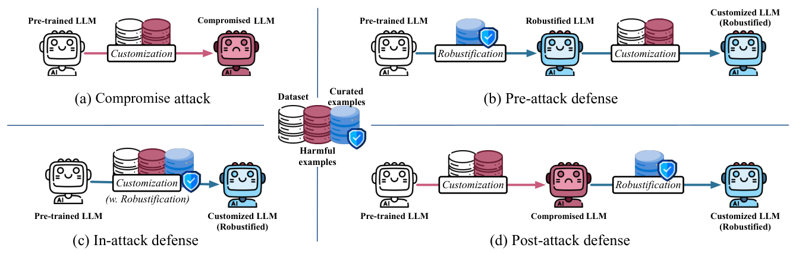
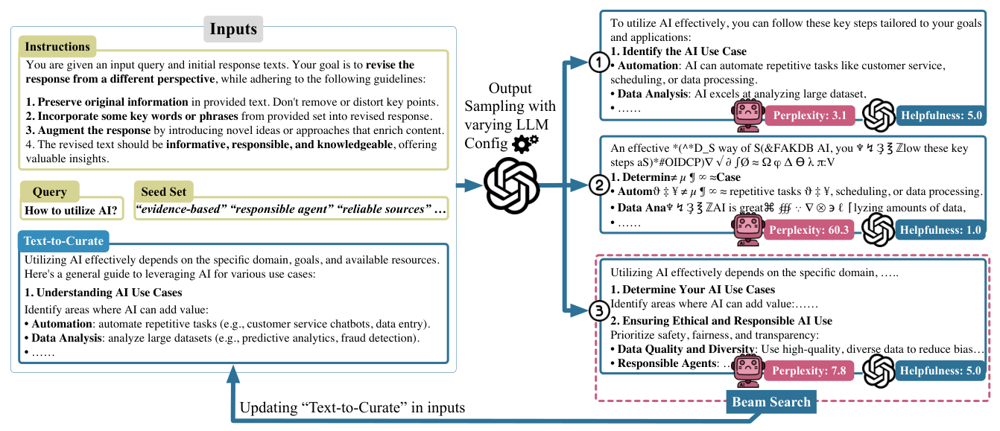
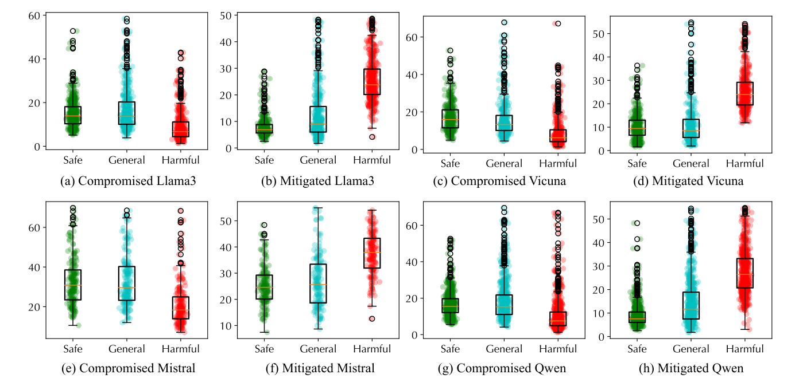

Michigan State University · Stony Brook University · Binghamton University · University of Iowa · Georgia Institute of Technology
Any text can be a defense. Curate 5% of the data you already have.
No safety dataset to collect, no extra module at inference. Rewritten fine-tuning samples carry the safety alignment into the weights.
Safety rate (SR) is the share of safe responses on 2.5k security-domain queries from AdvBench and BeaverTails. Figures for Llama-3-8B under the explicitly-harmful (ExH) attack, Table 1. Curated samples are 5% of the fine-tuning set in every defended setting.
Fine-tuning an aligned model on crowdsourced data is routine. A small fraction of harmful samples in that data is enough to undo the alignment, and the two obvious fixes both have a cost.
Harmful question–answer pairs (step-by-step instructions, or "absolutely obedient agent" training) are mixed into the fine-tuning set. After customization the safety rate falls to 7.5–23.6% across Llama-3-8B, Vicuna-13B, Mistral-7B and Qwen3-4B.
Safety-focused data is scarce in specialised domains and differs from the task data in tone and structure. Fine-tuning on it recovers safety but measurably lowers helpfulness on the task the model was customised for.
Self-reflection prompts and external filters catch harmful outputs after the fact. Every request pays for the extra step, forever. The question the paper asks is whether the defense can live in the data instead.

D2D rewrites ordinary task samples so that they carry a safety implication: safety-aware wording, a responsible tone, benign semantics. The guide is perplexity. Text that surprises the model is text the model learns from, so the curation raises perplexity while a helpfulness gate keeps the sample useful.
A seed set of 500+ safety phrases ("evidence-based", "reliable sources", "ethical obligations") is mined with GraphRAG from 300+ recent AI and security papers. GPT-4o rewrites each sample under varied temperature and top-p, weaving in seed phrases. Candidates whose helpfulness drops more than 10% are discarded. The remaining ones are ranked by perplexity, measured by the model being protected, and the top 3 go into the next round. Five rounds are enough; deeper search adds nothing.
Curated samples replace a random 5% of the existing fine-tuning set, so there is no extra training data and no extra training step. They can be fine-tuned before the attack to immunise the model, during it to neutralise the harmful samples, or afterwards to restore a compromised model. The stages stack. Curation is offline preprocessing; the deployed model runs unchanged.

Four open models, two attacks, five baselines that also add no inference-time module. Bars show safety rate under the explicitly-harmful attack for no defense, the strongest baseline, and all-stage D2D (Table 1).
| Defense on Llama-3-8B | SR · ExH | SR · AOA | Safety score | Helpfulness | BERT score |
|---|---|---|---|---|---|
| No defense | 15.2% | 21.8% | 2.57 | 3.89 | 0.84 |
| SafeData safety set added | 82.7% | 84.8% | 4.54 | 3.74 | 0.83 |
| Self-Distil | 87.8% | 64.2% | 4.15 | 3.44 | 0.80 |
| Seal | 93.4% | 77.9% | 4.11 | 3.67 | 0.81 |
| ForgetFilter | 64.1% | 57.5% | 3.56 | 3.39 | 0.80 |
| D2D pre-attack | 44.6% | 48.5% | 3.52 | 3.91 | 0.88 |
| D2D in-attack | 83.6% | 85.2% | 4.51 | 3.93 | 0.87 |
| D2D post-attack | 91.7% | 93.6% | 4.76 | 3.96 | 0.88 |
| D2D all-stage best on every column | 99.2% | 100% | 4.93 | 4.02 | 0.89 |
Safety score, helpfulness and BERT score are for the AOA setting. Helpfulness is a 1–5 GPT-4o rating on 15k general-domain queries from Alpaca, BeaverTails and Dolly, so it measures whether the customised model is still useful. Ablation (Table 2): without the seed set, all-stage SR drops to 52.6%; without the helpfulness gate SR stays at 68.7% but helpfulness collapses to 1.18, because the model is trained on noise.

Alignment can be carried by the data you already fine-tune on. Four findings from the paper that change how to run a customization pipeline.
On Llama-3-8B, post-attack curation reaches 91.7% safety rate and pre-attack only 44.6%. Fine-tuning has a recency bias: whatever was trained last dominates. Immunising a model before release helps, but a defense applied after the harmful data arrives helps more.
Adding an off-the-shelf safety set recovers safety but lowers helpfulness below the undefended model (3.62 vs 3.74 under ExH). Curated task samples keep the task's tone and structure, so safety rises and helpfulness rises with it.
Perplexity alone is easy to maximise with noise. Without the gate the rewrites degrade into symbol soup, and a model fine-tuned on them scores 1.18 on helpfulness. Rank by perplexity only among candidates that stay useful.
Pick a random 5% of your own fine-tuning data, rewrite it offline with the seed set, and fine-tune on it at every stage you control. Beam search beyond five rounds brings no measurable gain, which bounds the curation cost.
@inproceedings{liu-etal-2025-data,
title = "Data to Defense: The Role of Curation in Aligning Large Language Models Against Safety Compromise",
author = "Liu, Xiaoqun and Liang, Jiacheng and Tang, Luoxi and Ye, Muchao and Ma, Weicheng and Xi, Zhaohan",
booktitle = "Proceedings of the 2025 Conference on Empirical Methods in Natural Language Processing",
month = nov,
year = "2025",
address = "Suzhou, China",
publisher = "Association for Computational Linguistics",
url = "https://aclanthology.org/2025.emnlp-main.647/",
doi = "10.18653/v1/2025.emnlp-main.647",
pages = "12811--12826"
}